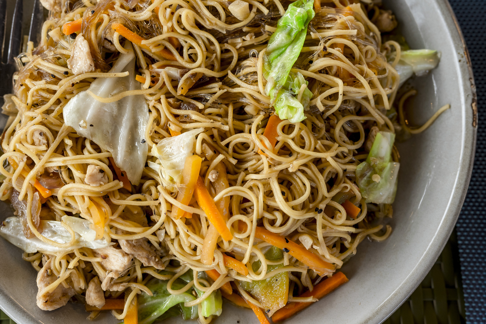

Un mestizo Chino-Filipino
- Pancit Bihon: Fideos de arroz finos.
- Pancit Canton: Fideos de trigo amarillos, similares al lo mein
- Pancit Palabok: Fideos con salsa de camarones.
El pancit (o pansit) es un plato de fideos salteados muy popular y tradicional en la cocina filipina, de origen chino. Consiste comúnmente en fideos de arroz o trigo cocinados con verduras, carnes (cerdo o pollo) y salsa de soja, siendo un plato festivo que simboliza larga vida y salud. Es considerado un alimento reconfortante y esencial en celebraciones y cumpleaños. Características principales: Origen: Introducido por comerciantes chinos, el nombre proviene del hokkien pian e sit, que significa "algo cocinado rápidamente". Variedades:
Ingredienti
- Brodo di pollo o maiale – 1 litro
- Noodles freschi – 200 g
- Salsa di soia – 2 cucchiai
- Uovo marinato – 1
- Alga nori – 1 foglio
- Cipollotto – 1
- Olio di sesamo – 1 cucchiaino
Preparazione
- Scalda il brodo e aggiungi salsa di soia e olio di sesamo.
- Cuoci i noodles separatamente e scolali.
- Disponi i noodles nella ciotola e versa il brodo caldo.
- Aggiungi uovo marinato, nori e cipollotto.
- Servi subito, ben caldo.
Note e varianti
Puoi aggiungere carne di maiale chashu, funghi shiitake o mais dolce. Per un gusto più intenso, prova a usare un brodo tonkotsu.